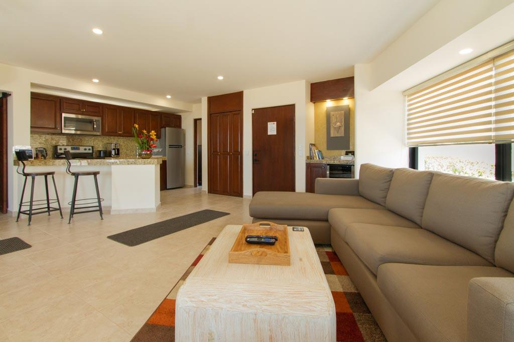
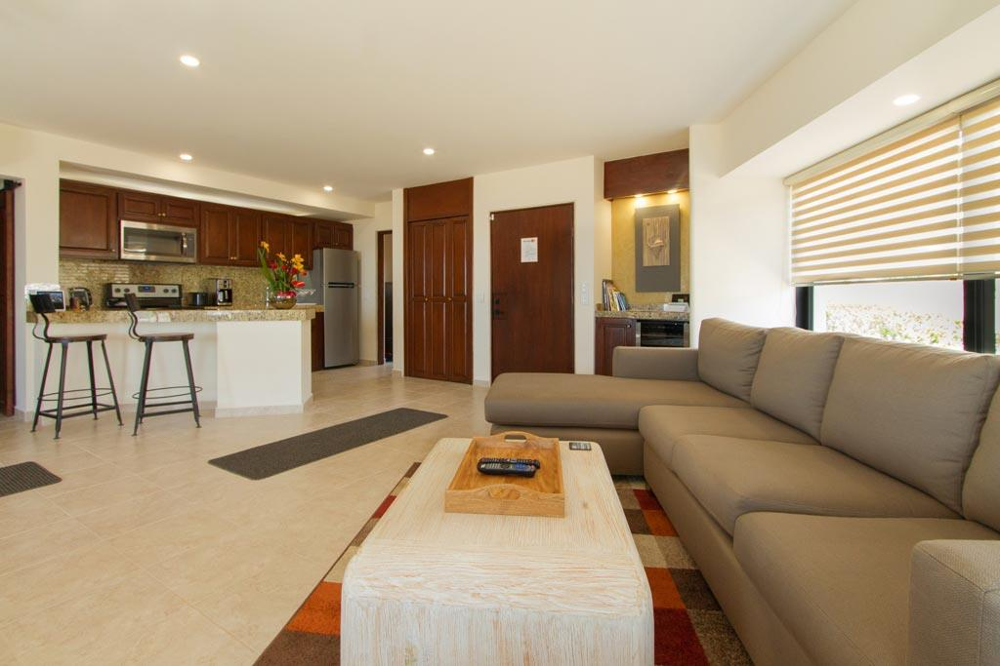
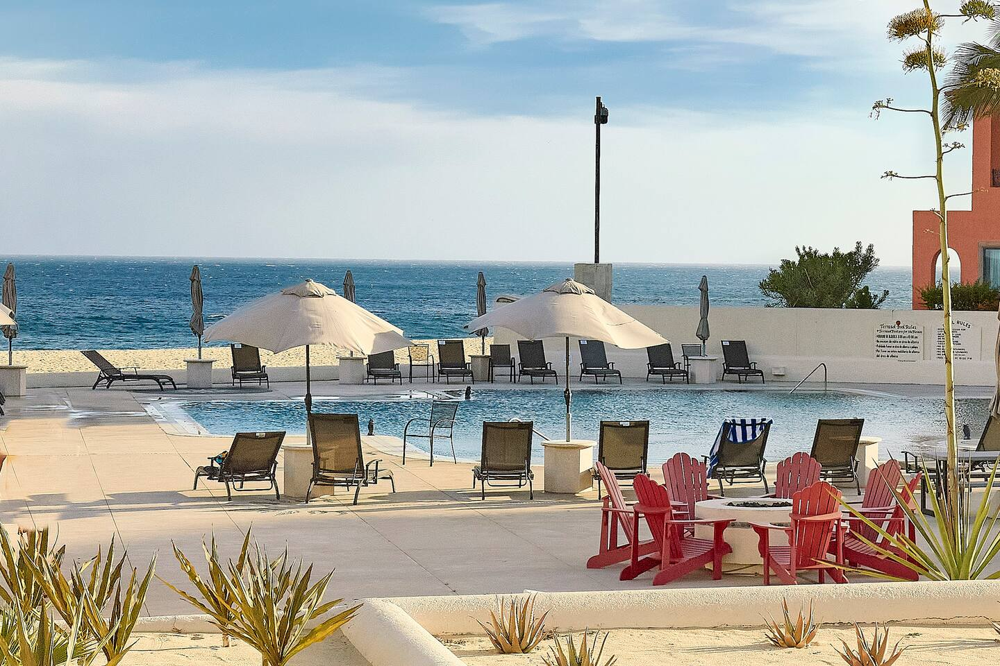
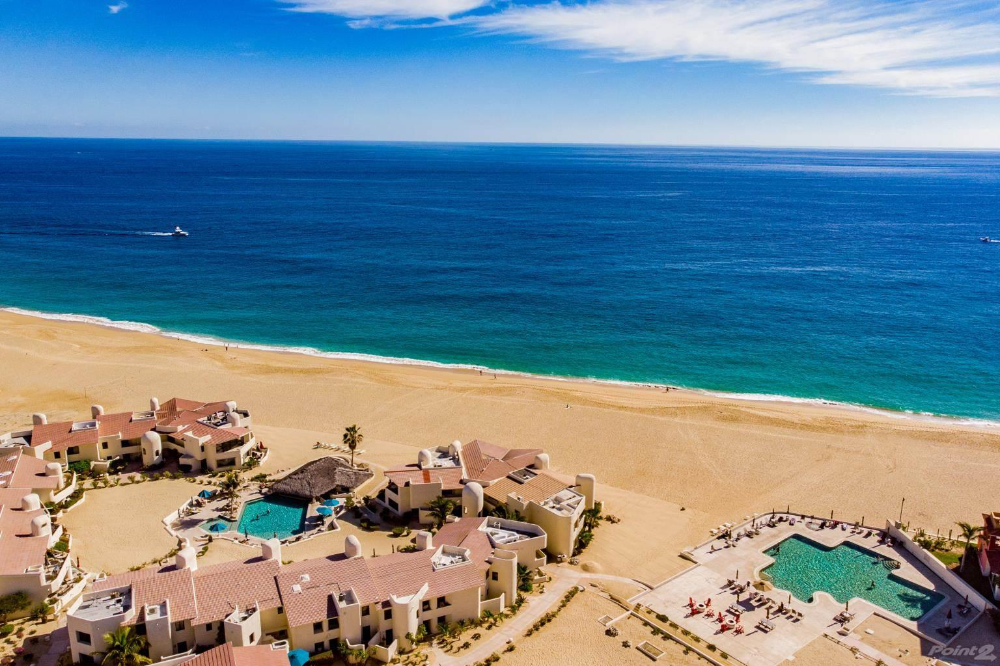
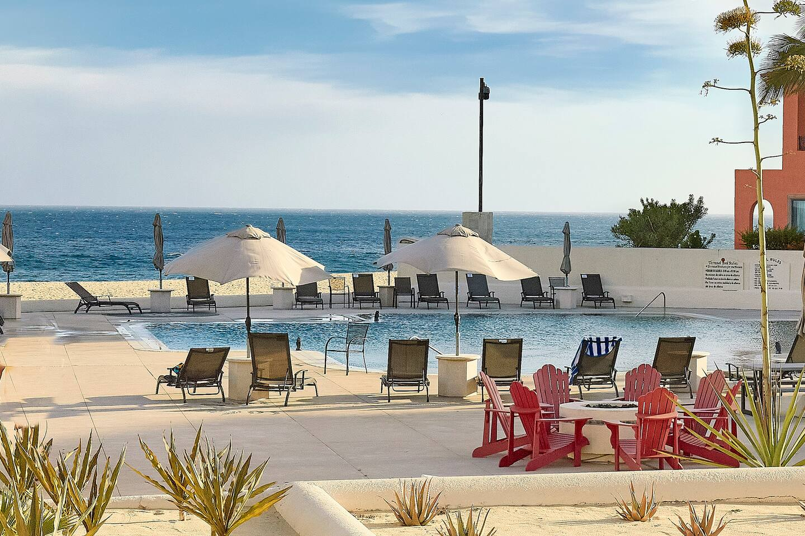
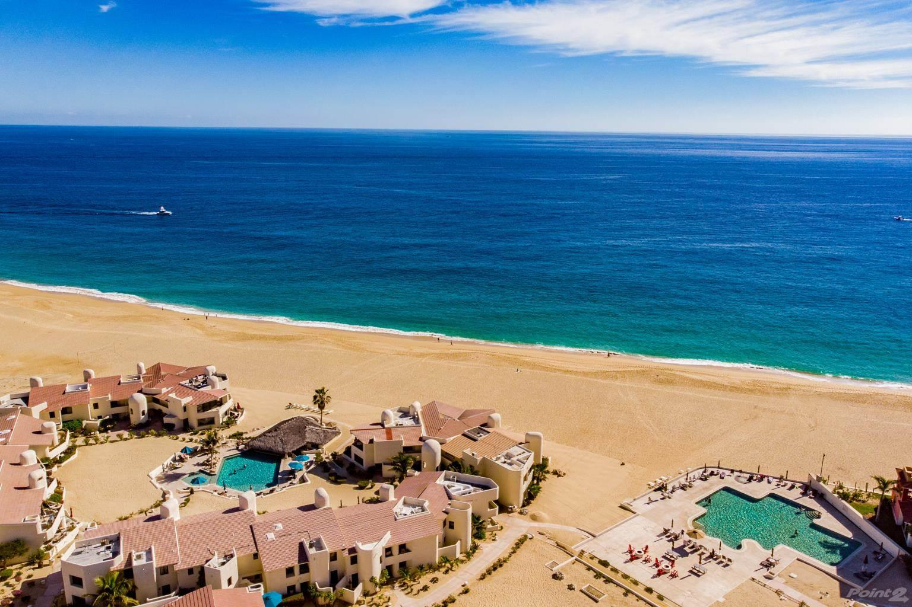
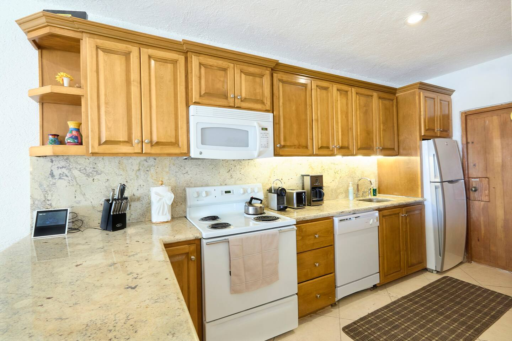
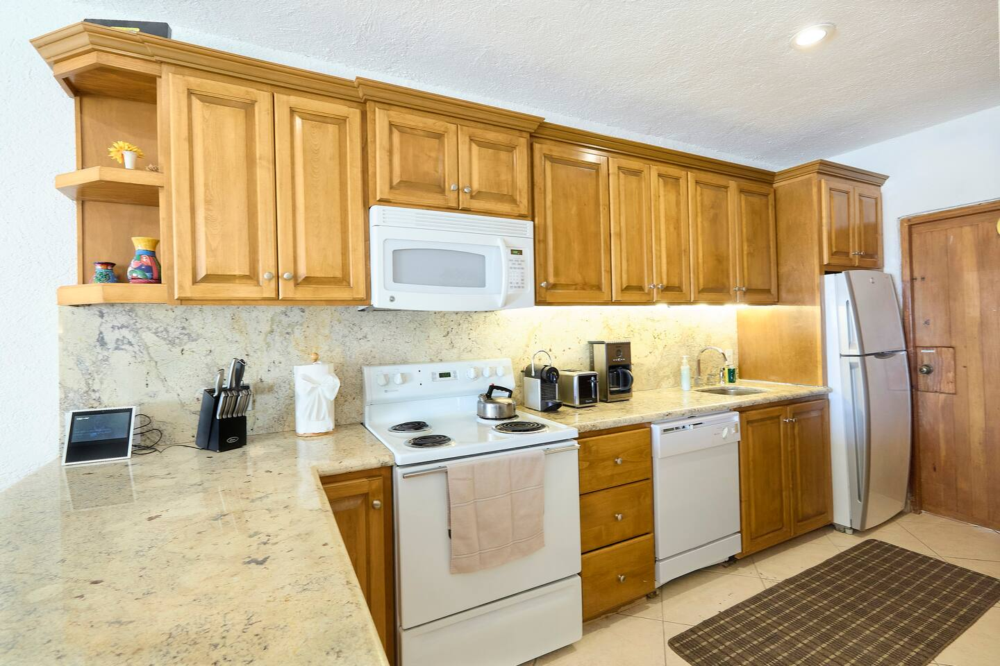

Available Units
Sunrise/Sunset #132
Full oceanfront views • Ground floor • Whale watching from bed
Beach Nest
Partial ocean views • High ceilings • Perfect for couples or families
Sunrise/Sunset #132
SUNRISE/SUNSET is one of the few places in the world you can watch the sun rise and set over the ocean right in front of your home. This stunning oceanfront 2-bedroom / 2-bath condo was completely renovated with attention to every detail. Step off the expansive wrap-around deck directly onto the sand, watch whales from bed, or walk 15 yards to the palapa pool and restaurant. This ground-floor unit truly has it all.

 

 



Beach Nest
This quaint yet open-end unit “BEACH NEST” is perched right on the sand. High ceilings, spacious common areas, and 2 roomy master bedrooms—each with their own full private bath—provide privacy and the immediate comfort of home. Direct access to sand and an expansive wrap-around deck for outdoor lounging and dining from the living area or either master bedroom. This 2-Bedroom/2-Bath unit is the perfect BEACH NEST for relaxation and the feeling of home!
100% remodeled and tastefully decorated with Cabo comfort furniture and authentic Mexican artwork. The kitchen is fully equipped for all your cooking needs. Partial ocean views from the inside unit and its expansive patio area. The two master bedrooms (both with king-size beds) provide more privacy for couples traveling together. The master bedroom and living room both open onto the patio deck; the second bedroom has its own private patio too. Pullout sofa in the living room for extra sleeping space.

 



Resort & Unit Amenities
Both units offer luxurious features at Terrasol Beach Resort. Highlights below (shared unless noted).
- Air Conditioning & Ceiling Fans
- Fully Equipped Kitchen (pots, pans, blender, coffee maker, dishwasher, oven, etc.)
- Washer & Dryer
- High-Quality Linens, Beach Towels & Essentials
- King Beds in Both Bedrooms + Queen Sofa Bed
- Wrap-Around Patio/Deck with Ocean Views
- Satellite TV & Wi-Fi
- Safe for Valuables
- Two Pools (one with swim-up palapa bar & restaurant)
- Outdoor Grill & BBQ Utensils
- Beach Essentials (towels, chairs, snorkel gear)
- Gated Resort with 24-Hour Security & Gym
- Family Extras (crib, pack 'n play – Beach Nest)
- Home Safety (smoke/CO detectors, first aid kit)
- Long-Term Stays Welcome
Guest Reviews
Combined feedback from both units—guests rave about the location, cleanliness, and tranquility.
“The views from the main room and master bedroom were gorgeous. Loved listening to the waves on the patio. The condo was well stocked with everything you could think of.”— TripAdvisor, Sept 2019 (Sunrise/Sunset)
“Perfect Location. Oceanfront and pool/restaurant front! Felt very safe! Nice not seeing the parked cruise ships and enjoyed no vendors.”— Troy, May 2023 (Sunrise/Sunset)
“This condo was simply awesome! The view from the master bedroom is all ocean. You are lulled to sleep by the crashing waves.”— Ricky, Feb 2023 (Sunrise/Sunset)
“We love staying at Terrasol… the beds were very comfy and the patio was great. Highly recommend.”— Carly, Dec 2025 (Beach Nest)
“The condo is spacious and well equipped… perfectly situated between Playa Grande and Grand Solmar. We will be back!”— Yalonda Michelle, July 2025 (Beach Nest)
“Beautiful place. Great location close to the busy marina area. But far enough away to be very peaceful and relaxing.”— Ryan, June 2025 (Beach Nest)
Location
Terrasol Beach Resort is directly on the sand between Grand Solmar and Playa Grande, near Land's End in Cabo San Lucas, Baja California Sur, Mexico. Walking distance to the Marina, downtown Cabo, Medano Beach, hundreds of restaurants, shopping, and nightlife. See both sunrise and sunset over the ocean. Quiet and private (no party vibe)—ideal for couples and families. Taxis/Uber available 24/7; bring walking shoes!
Contact & Inquiries
For details on either unit, please call:
(949) 424-4818 (8 AM – 6 PM PST)
Ask for Terrasol Resort Cabo Rentals
Privately owned condos at Terrasol Beach Resort. All resort fees, cleaning, and parking are handled directly by the resort.